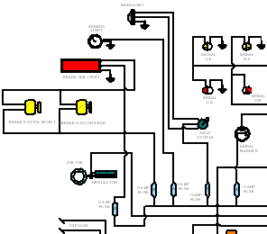

This tutorial demonstrates a typical workflow for creating a schematic diagram with Solid Edge. You will learn how to work with blocks and connectors and use other tools available in Solid Edge that make the creation and modification of schematic diagrams simple.
This tutorial is for beginners, so you do not need prior experience with Solid Edge Layout or any other computer-aided drafting or engineering modeling system to use it.
Estimated time to complete: 20 minutes
